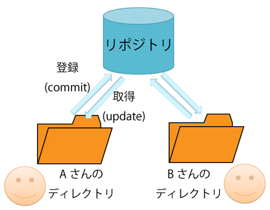

第一回のまとめ
gitに関して
gitとは
gitとは分散型バージョン管理システムである。
分散型バージョン管理システムと聞くと小難しいが、分散という言葉がある通り
リポジトリに手を加えようとした場合、自身のデータとして複製されたリポジトリができる。
自身はそのリポジトリを編集し、commitすることで共有されたリポジトリにデータが編集される。
このことから様々なユーザーがリポジトリを共有する過程の前に、自身のリポジトリができるため
分散型と呼ばれる所以である。 gitの魅力的なこととして、常に更新もしくは編集し続けたデータであっても、やり直したい部分から
始め直すことができることである。

引用画像元HP：
ガチで5分で分かる分散型バージョン管理システムGit
HTMLとは
神奈川大学MM PR動画